Todas as rodadas, da exploração inicial à direção atual. Cada pasta tem as variações completas em SVG, PNG e PDF.
Exploração inicial
A plaquinha do pet e a etiqueta de bagagem com a mesma forma.
não seguida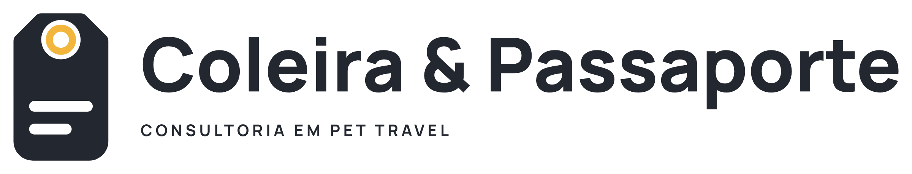
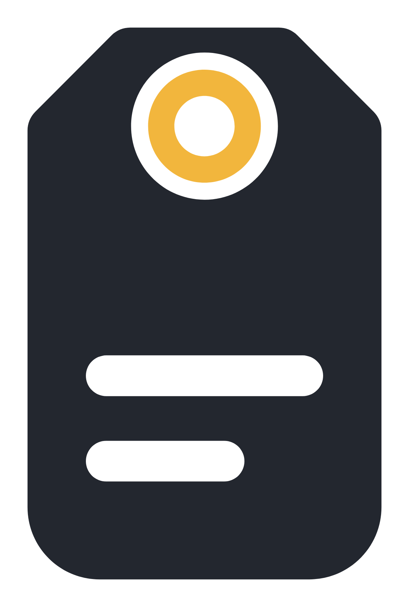
Exploração inicial
A coleira aberta vira uma estrada até o destino.
não seguida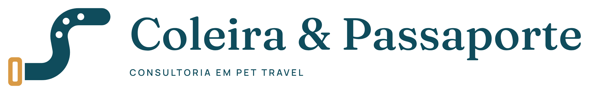
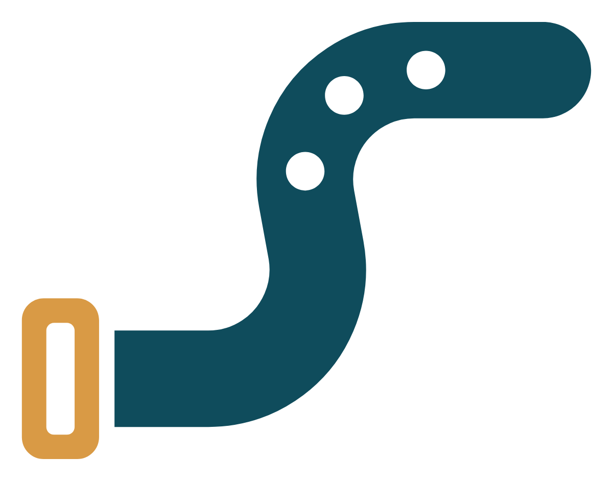
Exploração inicial
O & como um traço contínuo, uma guia que termina numa tag.
escolhida para desenvolver
Kit completo da direção C
Primeira versão final do Elo.
substituída pela r1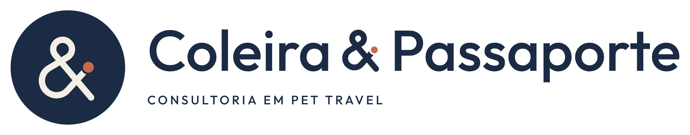
Kit completo
O & com nó entrelaçado e o nome integrado.
substituída pela r2
Kit completo
O & desenhado como coleira: fivela, argola, plaquinha.
substituída pela Dobra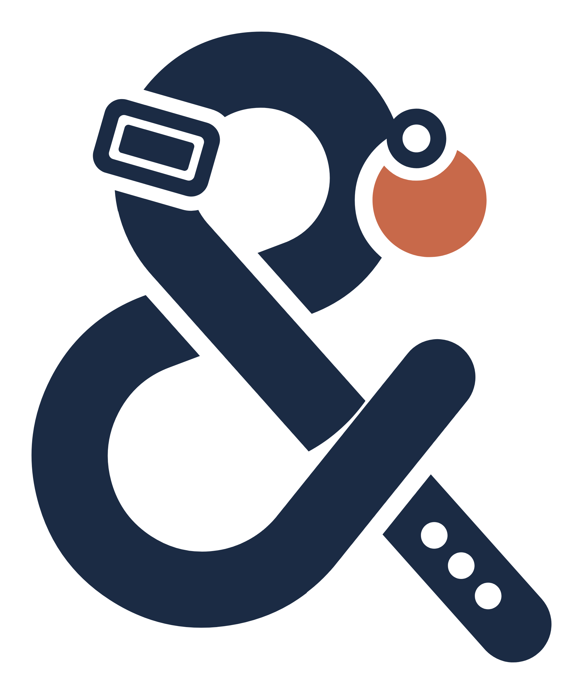
Estudos da rodada 3
O pet na janela do avião; a foto do pet no passaporte.
não seguidos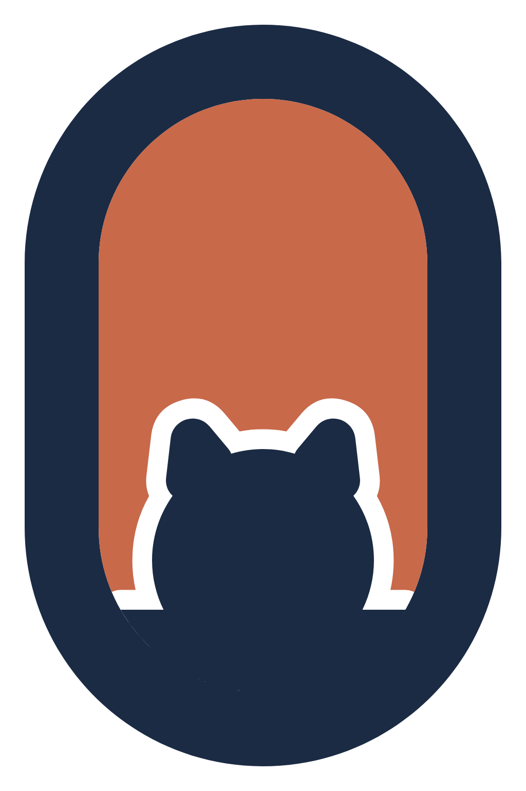
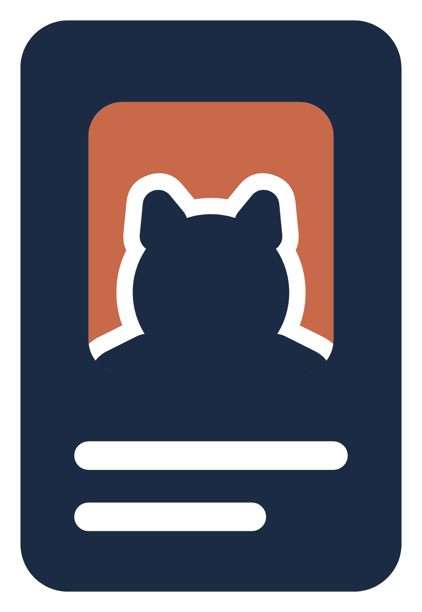
Kit completo
Um cão de origami feito da página do passaporte.
substituída pela direção E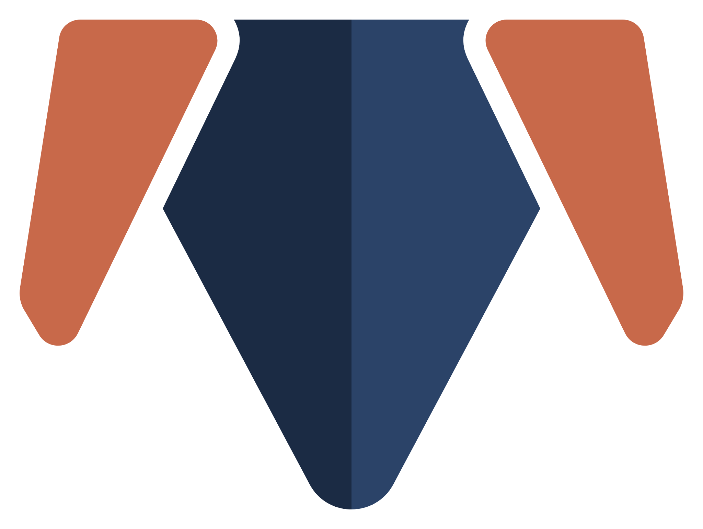
Kit completo
Coleira com plaquinha pendurada, cão e gato, rota de voo. O selo leva o nome na alça.
substituída pela r2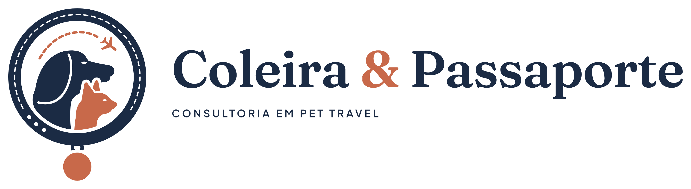
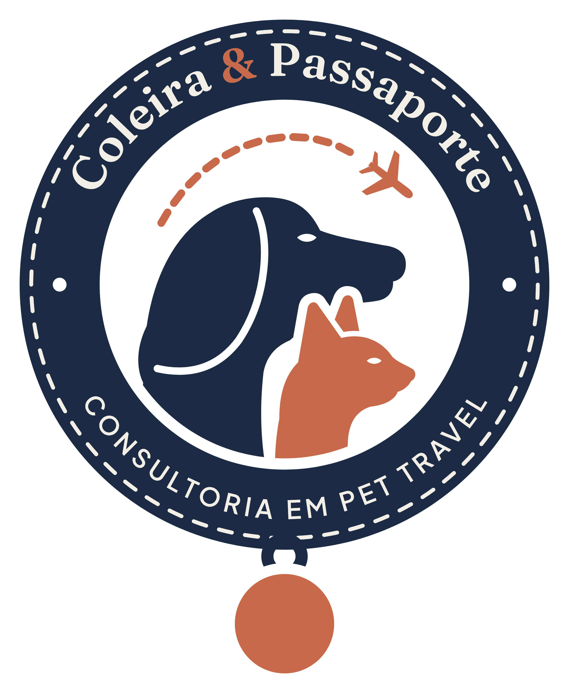
Kit completo · direção atual
Plaquinha presa na coleira, avião cortando a alça, pets maiores e o novo logo compacto.
atual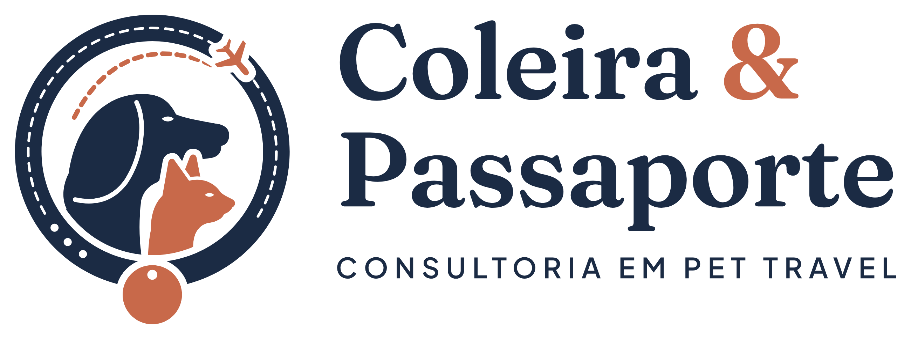
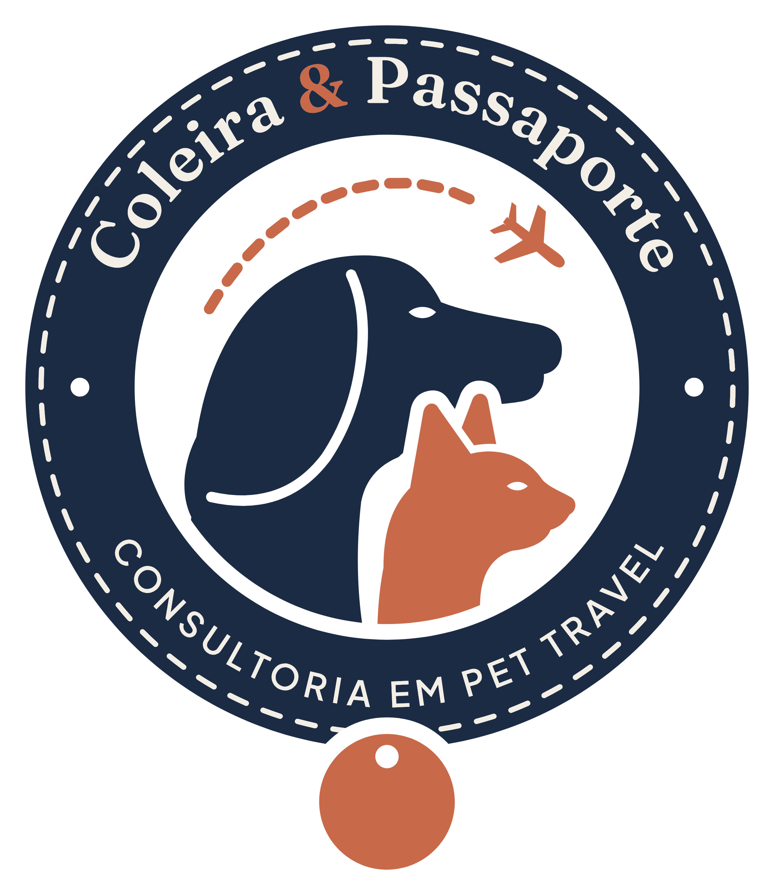
